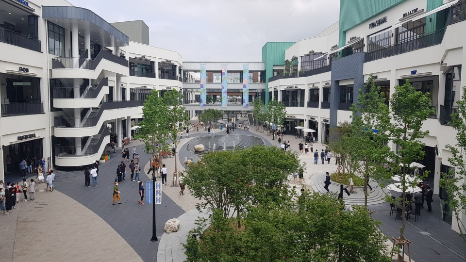
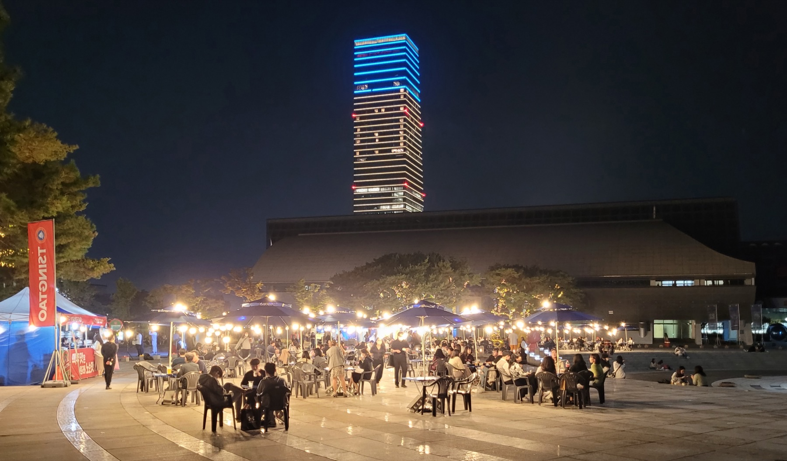
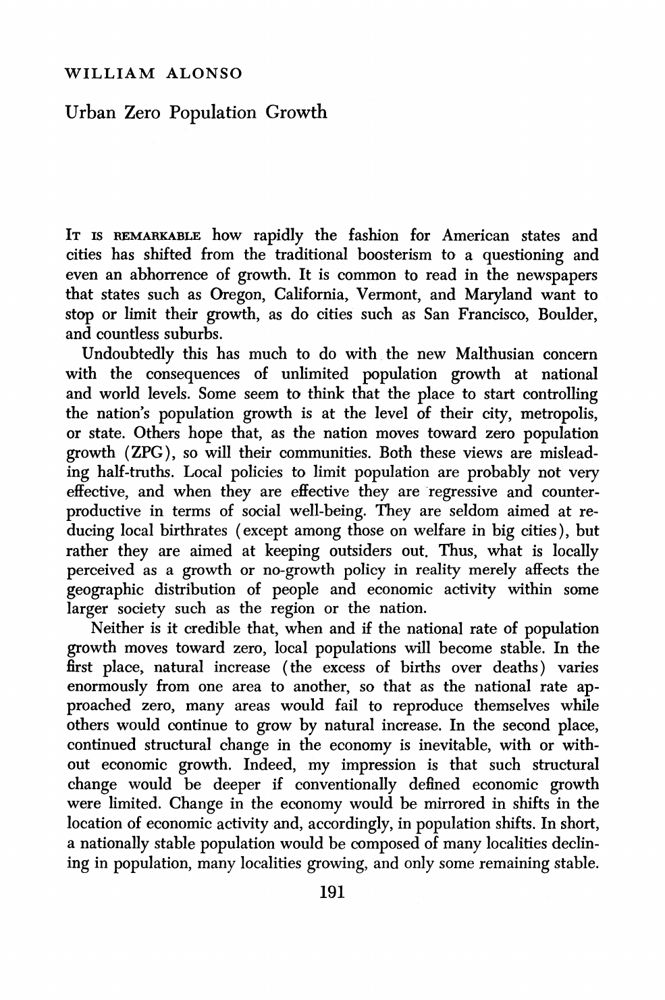
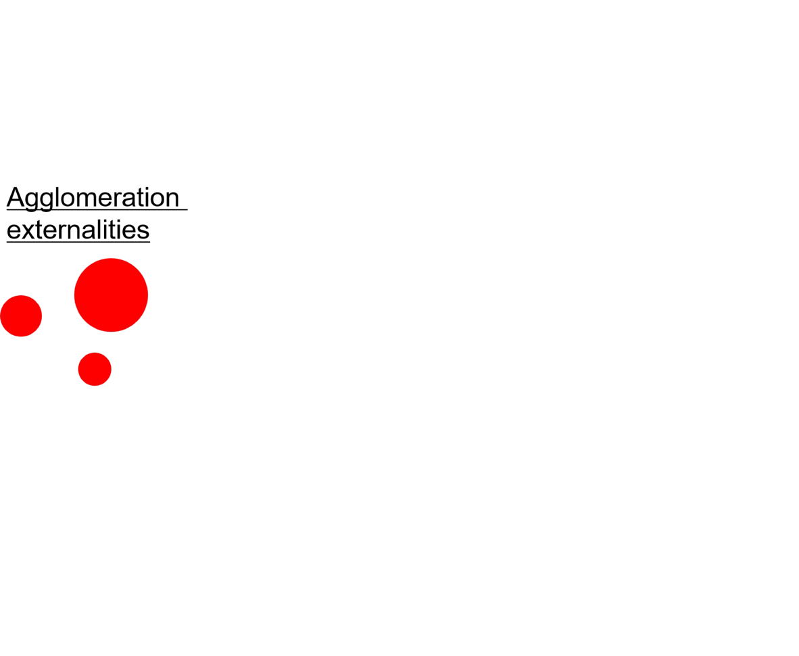
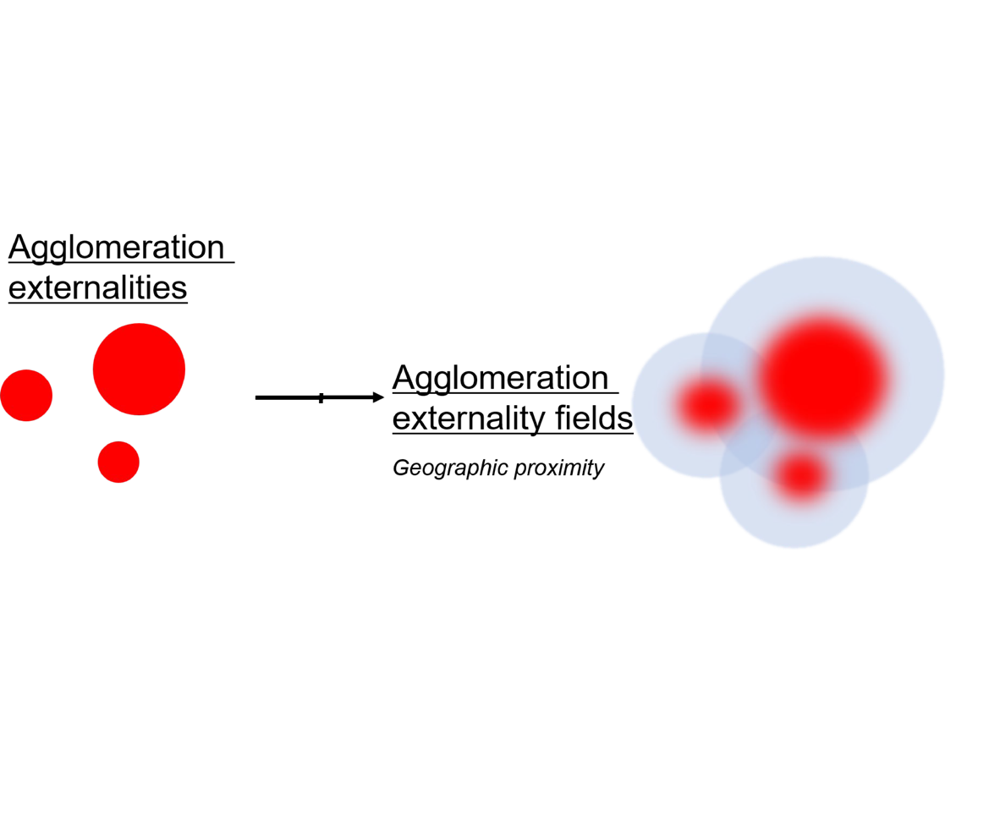
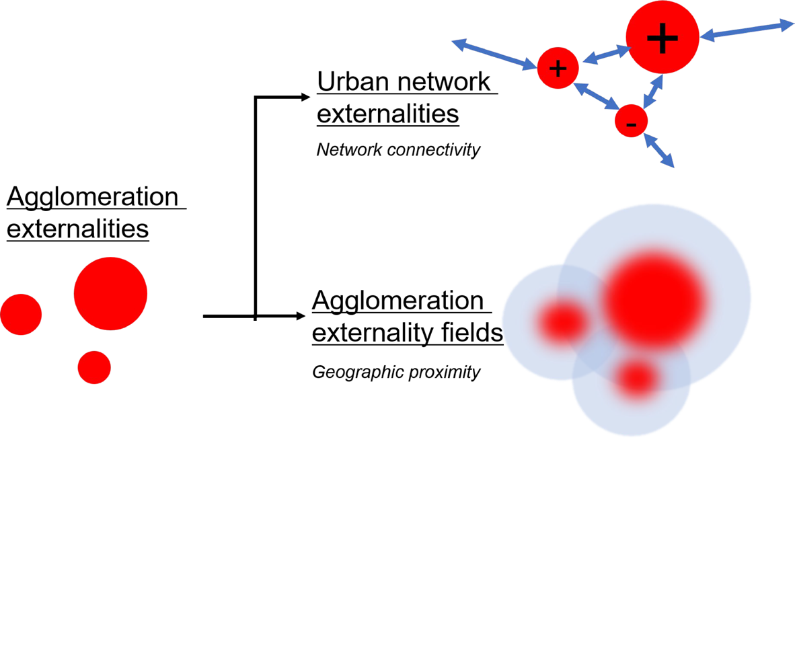
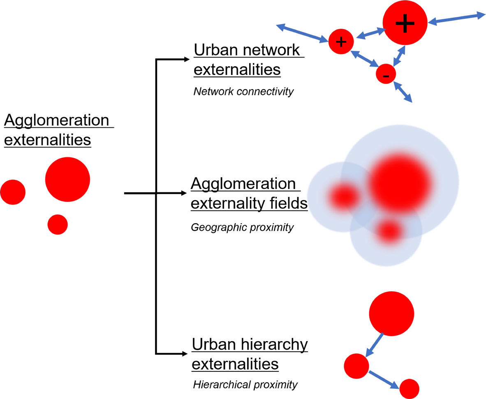

The Geography of Borrowed Size: Concepts, Empirical Evidence and Challenges
세종
사는 곳
청주
일하는 곳
대전
쇼핑하는 곳
평일 출퇴근
주말 쇼핑
세종: 정부세종청사
청주: SK하이닉스
청주: 충북대학교
대전: 성심당
들어가며
행정경계: 통계청 2018 (southkorea-maps)
01 · 대전에서 본 차용규모
2013년 1,532,811명을 정점으로 감소, 2025년 1,440,729명
주: 주민등록인구, 각 연도 12월 말 · 출처: 행정안전부 주민등록인구통계 jumin.mois.go.kr (2008~), 대전통계연보 (2000~2007)
01 · 대전에서 본 차용규모

현대프리미엄아울렛 대전점
2020년 개점
사진: 디트뉴스24 (2020. 6. 26. 개점일)

대전신세계 Art & Science
2021년 개점
사진: Bernard Gagnon, Wikimedia Commons (CC0)
01 · 대전에서 본 차용규모
갤러리아 타임월드
1997년 개점
동양백화점 타임월드로 개점, 2000년 한화 편입
사진: CA-PLAN
롯데백화점 대전점
2000년 개점
사진: 파이낸셜뉴스
백화점 세이
1996년 개점
2024년 폐업
사진: 한국일보 (1996년 개점 당시)
01 · 대전에서 본 차용규모
2012년 이후 대전 -83,854명, 세종 +278,848명
대전광역시
세종특별자치시
주: 두 그래프의 세로축 범위가 다름 · 주민등록인구, 각 연도 12월 말
출처: 행정안전부 주민등록인구통계 jumin.mois.go.kr (2008~), 대전통계연보 (2000~2007)
02 · 개념의 탄생: ALONSO (1973)
1933: 아르헨티나 출생 · 1946 미국 이주
1954 · 1956: 하버드대 건축과학 학사 · 도시계획 석사
1960: 펜실베이니아대 지역과학 박사 (Walter Isard 지도, 이 분야 첫 박사)
1964: Location and Land Use: 도시 토지시장 이론
1966–76: UC 버클리 교수
1976–99: 하버드대 인구정책 교수
1978–79: 지역과학협회 회장
출처: Poot (2025), pp.3–5
출처: Poot, J. (2025). William Alonso (1933–1999): Urban economist and economic demographer par excellence. In P. Batey & D. Plane (Eds.), Great minds in regional science (Vol. 3, pp. 235–260). Springer. https://doi.org/10.1007/978-3-031-90625-1_13
02 · 개념의 탄생: ALONSO (1973)
입찰지대곡선(Bid-rent Curve)
→ 도심에서 상업·주거·농업 순의 동심원 형성
출처: Alonso, W. (1964). Location and land use: Toward a general theory of land rent. Harvard University Press.
02 · 개념의 탄생: ALONSO (1973)
“… the concept of borrowed size, whereby a small city or metropolitan area exhibits some of the characteristics of a larger one if it is near other population concentrations.”
Alonso, W. (1973). Urban zero population growth. Daedalus, 102(4), p.200
02 · 개념의 탄생: ALONSO (1973)

글의 논지: 지방 정부의 인구 성장 통제 정책 비판
1970년대 지방 정부의 성장 억제 정책은 경제적 도시와 행정 단위(지자체)를 구분하지 못한 것
→ 성장 억제 정책은 인접 도시의 성장을 유발할 뿐이며, 각 도시들은 대도시권 단위에서 서로 의존적
차용규모(borrowed size) (p.200)
다른 인구 집중지 가까이의 작은 도시
: 이웃 도시의 쇼핑·여가 시설, 창고·사업서비스, 더 넓은 노동시장을 공유
→ 혼잡은 적고 큰 도시의 이점은 누림
→ 실제 미국 메갈로폴리스의 작은 대도시권이 더 빨리 성장
→ 다만 이 개념은 "강한 경험적 증거에도 불구하고 아직까지 충분히 연구되지 않았다”
“This phenomenon of borrowed size, with the hint that it is possible to have one’s cake and eat it too, has not been sufficiently studied, in spite of the strong statistical evidence of its existence. It seems to account for the fact that in the large American megapolitan constellations, the smaller metropoles are growing more rapidly than the bigger ones.” (p.200)
출처: Alonso, W. (1973). Urban zero population growth. Daedalus, 102(4), 191–206.
03 · 개념의 발굴과 확장
28년 만의 재등장
배경: 1980~90년대 영국 소기업의 도시→농촌 이동
자료: 잉글랜드 소도시 두 곳 소기업 100곳 전화설문
결과: 런던·버밍엄 시장과 계속 거래, 장점은 교통·통신과 중심성
Interaction between firms and populations of individual settlements is both a measure of, and the mechanism enabling, borrowed size.
Phelps et al. (2001), p.615
핵심 의미
1. 빌리는 주체: 도시가 아니라 개인과 기업
Alonso의 “도시가 빌린다”는 그 안의 개인·기업을 묶어 부른 축약 표현 (p.623, 주1)
2. 입지가 아니라 접근성이 중요
큰 도시 안에 있지 않아도 오가기 쉬우면 그 시장을 씀
3. 집적 외부성의 범위 차이
시장(고객·거래처)의 이점은 멀리까지 닿음 → 기업이 큰 도시 밖으로 나갈 수 있게 함
직접 만나서 얻는 정보·기술의 이점은 가까이에 묶임 → 기업을 큰 도시 쪽에 붙잡음
→ 두 힘 사이, 큰 도시에 오가기 쉬운 작은 도시가 두 이점을 함께 빌림 = 차용규모
출처: Phelps, N. A., Fallon, R. J., & Williams, C. L. (2001). Small firms, borrowed size and the urban–rural shift. Regional Studies, 35(7), 613–624. https://doi.org/10.1080/00343400120075885
03 · 개념의 발굴과 확장
Alonso 정의에 깔린 다섯 전제
Ⓐ: 관찰·측정할 수 있는 분석적 개념 (아직은 규범적 개념이 아님)
Ⓑ: 소도시가 대도시에서 빌리는 한 방향 과정
Ⓒ: 다핵 대도시권 안: 이웃과 가깝고 기능적으로 연결
Ⓓ: 고립 도시보다 집적 이익과 비용의 균형이 나음
Ⓔ: 통로는 접근성과 네트워크 연결 (측정: 인구잠재력)
전제를 늘린(stretch) 방향
Alonso (1973)
Meijers & Burger (2017)
누가
Ⓑ 대도시 근처의 소도시
→
모든 도시
(큰 도시에서 더 빈번)
어떻게
Ⓒ·Ⓔ 지리적 근접,
인구잠재력
→
여러 공간 스케일의
도시 네트워크
무엇을
Ⓓ 큰 도시의 특성 일부
→
기능과 성과의 2×2
왜
시장의 집적으로 생김
→
+ 행정 배분:
제도적 차용규모
출처: Meijers, E. J., & Burger, M. J. (2017). Stretching the concept of ‘borrowed size’. Urban Studies, 54(1), 269-291.
https://doi.org/10.1177/0042098015597642
03 · 개념의 발굴과 확장
Size borrowing occurs when a city exhibits urban functions and/or performance levels normally associated with larger cities as a product of interactions within networks of cities on multiple spatial scales that provides a substitute for the benefits of agglomeration.
Meijers & Burger (2017), p.288
누가 빌리나
소도시만이 아니라 모든 도시
큰 도시에서 오히려 더 빈번
소도시 대비 승산비:
중도시 1.86, 대도시 1.87, 초대형도시 2.70
어떻게 빌리나
지리적 인접성에서 네트워크 외부성으로
국지·국가·국제 스케일의 도시 간 상호작용
상위 개념: 도시 네트워크 외부성
(Capello 2000; Boix & Trullén 2007)
무엇을 빌리나
기능에서 성과까지
차용기능: 제 규모로 못 버틸 대도시급 기능
차용성과: 고립 도시보다 높은 소득·성장
출처: Meijers, E. J., & Burger, M. J. (2017). Stretching the concept of ‘borrowed size’. Urban Studies, 54(1), 269–291. https://doi.org/10.1177/0042098015597642
04 · 집적그림자
가격경쟁 때문에 같거나 더 큰 도시 바로 옆에서는 도시가 자라기 어려움
대도시의 규모차용으로 보면
대도시 기업이 더 싸고 다양하게 판매 → 인근 수요자가 대도시로 이동
소도시: 가격경쟁에서 패배 = 집적그림자
대도시: 이웃 수요로 제 규모 이상의 기능 = 차용규모
the largest places within a FUA ... borrow size from elsewhere, thereby casting an agglomeration shadow over the surrounding places
Burger et al. (2015), p.1101
Partridge 외(2009)의 검정
미국 카운티 3,029개, 1990~2000년 인구성장
대부분: 큰 도시에 가까울수록 성장 (농촌: 1km당 약 0.1%p)
그림자: 소형 대도시권끼리, 최대 도시권 옆 중형 도시권뿐
→ 연결의 이익이 가격경쟁의 손해보다 큼
출처: Partridge, M. D., Rickman, D. S., Ali, K., & Olfert, M. R. (2009). Do New Economic Geography agglomeration shadows underlie current population dynamics across the urban hierarchy? Papers in Regional Science, 88(2), 445–467. https://doi.org/10.1111/j.1435-5957.2008.00211.x
04 · 집적그림자
집적경제와 집적불경제처럼, 차용규모와 집적그림자는 같은 연결에서 동시에 생기는 두 힘
도시 안: 집적경제와 집적불경제
+ 집적경제: 공유·매칭·학습
− 집적불경제: 혼잡·높은 지대·오염
불경제가 더 크면 모이지 않고 흩어짐
→ 도시가 유지되는 한 순효과 ≥ 0
도시 사이: 차용규모와 집적그림자
+ 차용규모: 이웃의 기능과 시장에 접근
− 집적그림자: 가격경쟁으로 소비·기능이 이웃으로 빠짐
그림자가 더 클 수도 있음
→ 도시의 본래 규모보다 적은 수준의 기능을 보유
순효과 = 차용규모 − 집적그림자
> 0 이면 이득, < 0 이면 손해
근거: 미국 카운티 대부분은 큰 도시에 가까울수록 성장, 그림자는 일부 위계에서만 나타남 (Partridge et al. 2009)
05 · 차용규모의 작동 방식

집적 외부성
agglomeration externalities
도시 안에서 규모가 만드는 이익
: 공유, 매칭, 학습
→ 이익을 정하는 것은 그 도시의 규모
출처: Kwon, K., & Sohn, J. (2026). Borrowed size of small and medium cities in a hierarchical urban system. Tijdschrift voor Economische en Sociale Geografie. Advance online publication. https://doi.org/10.1111/tesg.70061
05 · 차용규모의 작동 방식

집적 외부성의 장
agglomeration externality fields
지리적 근접성
외부성이 도시 경계 밖으로 번짐
가까운 이웃일수록 더 많이 나눠 씀
→ Alonso가 말한 원래의 차용규모
출처: Kwon, K., & Sohn, J. (2026). Borrowed size of small and medium cities in a hierarchical urban system. Tijdschrift voor Economische en Sociale Geografie. Advance online publication. https://doi.org/10.1111/tesg.70061
05 · 차용규모의 작동 방식

도시 네트워크 외부성
urban network externalities
네트워크 연결성
거리보다 연결의 강도가 중요
연결에서 이익(+)과 손해(−)가 함께 발생
→ Meijers & Burger가 확장한 차용규모와 집적그림자
출처: Kwon, K., & Sohn, J. (2026). Borrowed size of small and medium cities in a hierarchical urban system. Tijdschrift voor Economische en Sociale Geografie. Advance online publication. https://doi.org/10.1111/tesg.70061
05 · 차용규모의 작동 방식
제도적 차용규모(institutional borrowed size): 시장의 집적이 아니라 공공의 배분으로 갖추게 된 대도시급 기능
Occasionally, these cities offer public services of general interest (education, a hospital, etc.) for which they lack the supporting critical mass independently, but which guarantee a just spatial distribution that allows for equal access to basic services.
Meijers & Burger (2017), p.276
주변부 고립 소도시: 교육·병원 등 기본 공공서비스를 형평 배분으로 배치
과학 기능: 대학·연구기관이 작은 고립 도시에도 흔함 (규모–기능 상관: 고립 0.749, 이웃 있음 0.887)
고립의 보호: 지역 경쟁에서 보호, 배후 농촌의 중심지 기능 확보
출처: Meijers, E. J., & Burger, M. J. (2017). Stretching the concept of ‘borrowed size’. Urban Studies, 54(1), 269–291. https://doi.org/10.1177/0042098015597642
05 · 차용규모의 작동 방식

도시 위계 외부성
urban hierarchy externalities
위계적 근접성
최상위 도시에 위계상 가까울수록 차용
국가 자원 배분이 선택과 집중으로 상위 도시에
→ 유럽과 반대 방향의 제도적 차용규모
출처: Kwon, K., & Sohn, J. (2026). Borrowed size of small and medium cities in a hierarchical urban system. Tijdschrift voor Economische en Sociale Geografie. Advance online publication. https://doi.org/10.1111/tesg.70061
06 · 차용규모의 측정과 증거
무엇을 재나
인구 규모로 예측되는 기능·성과보다 실제가 많은가 적은가
기능 = α + β·ln인구 (+ γ·ln밀도) + ε
또는 인구 대비 기능·성과의 표준점수
판정: ε > 0 차용, ε < 0 그림자 · 기능×성과를 교차해 4유형(9칸)
추정법: OLS 잔차 → 잔차로 차용/그림자 유형분류
→ 로지스틱·순서형 회귀, t검정으로 유형설명
주요 결과
차용은 큰 도시에서 더 빈번:
소도시 대비 승산비 초대형도시 2.70
이웃과의 기능적 통합이 강할수록 차용 우세
→ 규모로 설명되지 않는 몫을 차용 또는 그림자로 분류
관련 연구
Meijers & Burger (2017); Volgmann & Rusche (2020); Meijers & Cardoso (2021)
06 · 차용규모의 측정과 증거
무엇을 재나
주변 도시의 규모를 거리로 할인해 더한 값, 곧 빌릴 수 있는 규모
(원형은 Alonso (1973)의 인구잠재력)
인구잠재력·GRP 잠재력: BS = Σ Mⱼ ÷ dᵢⱼ
M: 인구·인구밀도·인구비중·GRP
45분 반경 인구: Y = β₁·자기 인구 + β₂·45분권 인구 (+ β₃·국가·국제 연결성)
β₃의 연결성은 ④ 네트워크 연결성에서 다룸
판정: 잠재력 지표의 계수 > 0 이면 차용, < 0 이면 그림자
추정법: FE·IV·동태 GMM, 확률변경분석, 2SLS · 영-일 팽창 베타회귀
주요 결과
이웃이 클수록 내 생산성도 높음
일본 47개 도도부현: 주변 GRP 잠재력이 1% 늘면 생산성이 장기적으로 0.265% 오름 (Otsuka)
이미 큰 도시는 덜 빌림
중국 도시의 기업: 탄력성 0.234, 자기 인구가 클수록 효과가 작아짐 (Li 외)
역인과를 걸러내면 효과는 1/3
생산성 높은 도시로 사람이 몰리는 경로를 도구변수로 빼면 0.234 → 0.0744 (Li 외)
45분권 이웃은 작은 도시에 그림자
유럽 1,114개 도시: 인구 25~35만 미만은 이웃이 클수록 대도시기능이 줄고, 50만 이상에서만 늘어남 (Meijers 외)
관련 연구
Otsuka (2018·2020·2024a·b·2025c); Li, Luo & Zhang (2026); Burger 외 (2015); Meijers, Burger & Hoogerbrugge (2016)
06 · 차용규모의 측정과 증거
무엇을 재나
이웃 지역의 특성이 내 지역의 결과에 주는 파급(간접효과)의 부호
y = ρWy + Xβ + WXθ + ε
W: 공간가중행렬 · θ: 이웃 특성의 파급계수
판정: θ(간접효과) > 0 차용, < 0 그림자 · 채널(변수)별로 판정
추정법: 공간 더빈 모형 최우추정
주요 결과
한 회귀식 안에서 채널마다 부호가 갈림
이웃의 산업특화·인적자본·교통자본을 한 식에 함께 넣음
(일본 47개 도도부현 제조업, Otsuka)
인적자본 → 차용
이웃의 인적자본이 많을수록 내 생산성↑: 간접효과 +0.076
산업특화 → 그림자
이웃에 산업이 몰릴수록 내 생산성↓: 간접효과 −0.147
그림자가 있어도 총효과는 양(+)
산업특화의 총효과 0.308 = 직접 0.455 + 간접 −0.147
→ 채널별 θ의 부호로 차용과 그림자를 한 모형에서 추정
관련 연구
Otsuka (2025a); Yang 외 (2022)
06 · 차용규모의 측정과 증거
무엇을 재나
거리 대신 도시 사이의 실제 연결(검색·통행·네트워크 연계)의 강도로 측정
사이버공간 가중합: BOR = Σ 성과(또는 인구) × W
W: 바이두 검색량으로 잰 도시 간 근접
수신 상호작용: 수신도 = Σ 들어오는 통행
국가·국제 연결성: 45분권 식의 β₃
판정: 계수 > 0 이면 차용 · 수신도가 높으면 차용, 낮으면 그림자
추정법: 패널 FE, 2SLS, 문턱회귀 · 수신도는 통계 검정 없음
주요 결과
온라인 근접은 양(+), 지리적 근접은 음(−)
차용성과 0.1253, 차용기능 0.3753 · 지리 기준 −0.9959 (중국 도시체계)
→ 단순히 가까이에 있으면 경쟁관계, 연결이 높으면 차용관계
관련 연구
Sun, Huo & Shi (2026); Poorthuis & van Meeteren (2021); Meijers, Burger & Hoogerbrugge (2016)
06 · 차용규모의 측정과 증거
무엇을 재나
도시 위계상의 지위와 상위 도시까지의 거리가 성과를 가르는가
Y = β·위계 더미 + γ·상위 도시까지 거리 (+ 통제변수)
판정: β > 0 또는 γ < 0 이면 차용
추정법: 횡단면 OLS, 공간 GMM
주요 결과
한국 중소도시 152곳: 행정시 더미 8개 지표 중 6개 양(+),
서울까지 거리는 5개에서 음(−)
미국 카운티 3,029개: 농촌은 큰 도시에서 1km 멀어질 때마다 성장률 약 0.1%p 하락
→ 상위 위계에 있거나 큰 도시에 가까울수록 이득
관련 연구
Kwon & Sohn (2026); Partridge 외 (2009)
06 · 차용규모의 측정과 증거
① 잔차
차용은 큰 도시에서 더 빈번, 이웃과의 기능적 통합이 강할수록 차용 우세
② 잠재력지수
가중합 지표는 모두 양(+), 자기 규모가 클수록 효과 체감
45분권은 작은 도시에 음(−)
③ 공간 회귀계수
채널별 이웃 효과가 음(−)이어도 총효과는 양(+)
④ 네트워크 연결성
온라인 근접은 양(+), 지리적 근접은 음(−): 같은 도시체계도 무엇으로 재느냐에 따라 부호가 바뀜
⑤ 위계 구분
상위 위계에 있거나 큰 도시에 가까울수록 이득
대체로 차용규모는 존재. 단 대도시의 효과가 더 큰 경우가 많으며 연결성, 위계 또한 차용의 작동방식으로 작용
07 · 향후 과제
1
측정: 거리만으로 차용규모를 잴 수 있는가
같은 거리에 있어도 도시마다 빌리는 정도가 다른데 그 차이는 어떻게 반영할 것인가?
2
해석: 차용규모는 제로섬 게임인가
다른 도시에 규모를 빌려주면 나는 손해를 보는 구조인가?
3
제도: 행정통합이 차용규모를 키우는가
차용규모를 정책 목표로 설정할 때 수단으로서 행정통합은 적절한 방식인가?
07 · 향후 과제
기존 지표: 차용규모 = Σ (주변 도시의 인구·GRP) ÷ 거리
같은 거리에 같은 규모의 이웃이 있으면 같은 효과를 가정
그런데 수도권 주변 도시들은 거리가 비슷해도 발전 수준이 크게 다름
설명 1: 받는 도시의 흡수역량(absortive capacity)
연결돼도 받아들일 역량이 없으면 빌리지 못함
차용규모 = 네트워크로 외부 자원에 접근하고,
흡수역량과 제도조정으로 전환한 실효 규모 (Otsuka 2025b·2026a)
설명 2: 도시 간 매칭
산업·기술 구조가 서로 맞물리는 정도
지리적 거리 말고도 여러 차원의 근접성이 맞아야 외부성이 오감
→ 거리 외의 조건을 지표에 반영할 필요
07 · 향후 과제
Boschma (2005)의 다섯 근접성
지리적
물리적 거리
인지적
지식·기술 기반의 유사성
조직적
조직 간 관계와 통제
사회적
신뢰와 개인적 관계
제도적
규칙·제도의 공유
근접성은 지나쳐도 해로움 (고착, lock-in) · Boschma, R. (2005). Proximity and innovation: A critical assessment. Regional Studies, 39(1), 61–74
제안: 차용규모ᵢ = Σⱼ 규모ⱼ × f(거리ᵢⱼ) × g(근접성ᵢⱼ) × h(흡수역량ᵢ)
연구 질문: 어떤 근접성의 조합에서 차용이 강하게 나타나는가 · 지리적 근접이 약해도 다른 근접성이 대신하는가
출처: Boschma, R. (2005). Proximity and innovation: A critical assessment. Regional Studies, 39(1), 61–74. https://doi.org/10.1080/0034340052000320887
07 · 향후 과제
제로섬 시각: 이웃이 인구·소비를 빌려 가면 내 도시의 기능이 줄어듦 → 정해진 인구의 나눠 먹기
따져 보기 위한 틀: 경제기반모형(economic base model)
권역 밖 수요
다른 지역·해외의 구매자
→
기반부문
권역 밖에 파는 산업
(제조업, 거점의 고차기능)
→
권역 소득
임금·이윤
→
권역 안 지출
소득 중 비율 s
→
비기반부문
권역 안 소비를 받는
상점·서비스
↓ 권역 밖 지출 (1 − s)
다른 지역 쇼핑·온라인 = 유출
↺ 다시 권역 소득으로
지출이 돌고 돌며 커짐 = 승수
승수 = 1 ÷ (1 − s)
기반부문 소득 1이 권역 소득을 1 ÷ (1 − s)만큼 만듦 (단순화한 소득 승수)
예: s = 0.5이면 2.0배, s = 0.6이면 2.5배 → 유출이 줄면 같은 기반 소득으로 권역 소득이 더 커짐
→ 권역 소득이 커지는 두 길: 기반부문 확대(권역 밖 수요 유입), 유출 감소(s 상승)
07 · 향후 과제
차용으로 거점이 임계 규모를 넘어 새 기능이 들어서면, 한 사람의 지출 100은 어떻게 바뀌는가
새 기능 이전
45
25
30
권역 안 70
새 기능 이후
42
38
20
권역 안 80
■ 내 도시
■ 생활권 안 다른 도시
■ 생활권 밖·온라인
숫자는 설명을 위한 예시 · 내 도시 몫은 45 → 42로 줄어도, 생활권 밖으로 새던 지출이 돌아와 권역 안 몫은 70 → 80
권역(생활권) 단위: 플러스섬
생활권 밖으로 새던 지출 일부가 돌아옴 → s 상승 → 승수 효과
새 기능이 권역 밖 수요까지 끌어오면 기반부문 확대
국가 단위: 제로섬일 수 있음
돌아온 지출은 다른 권역의 매출 감소 → 국가 전체로는 배분의 변화
Alonso (1973, p.191)의 배분 논리는 이 단위에서 성립
예외: 해외 유출의 대체, 없던 소비의 창출
→ 차용규모는 권역 단위에서 플러스섬 → 그렇다면 늘어난 몫은 누가 갖는가
07 · 향후 과제
늘어난 몫은 누가 갖는가: 통념(빨대효과)은 기능이 빠져나간 도시가 잃는다고 봄
① 거점이 주변 인구를 빌림
주변의 수요까지 합쳐 고차기능의 수요 문턱을 넘음
↓
② 거점에 고차 혹은 추가 기능 입지
주변 도시는 그 기능을 잃은 것처럼 보임
↓
③ 주변이 그 기능을 이용해 성과를 높임
기능은 거점에, 성과는 권역 전체에
기능 적음
기능 많음
성과 좋음
차용성과
기능은 이웃에서
차용규모
기능도 성과도
성과 나쁨
집적그림자
둘 다 잃음
차용기능
기능만 갖춤
Meijers & Burger (2017), Figure 5, p.287
→ 기능 유출이 곧 성과 손실은 아님 → 그 기능에 닿을 수 있느냐가 성과를 좌우
07 · 향후 과제
권역에서 보면: 경계를 어디에 긋느냐에 따라
일상생활권 안: 인구·소비의 이동은 배분의 변화, 권역으로는 손실 없음
일상생활권 밖: 소득이 권역 밖으로 새는 실제 유출
하지만 지자체에서 보면: 주민 한 명이 곧 득실
예산: 인구를 기준으로 재원과 계획이 배분됨
선거: 유권자가 곧 단체장의 정치적 기반
→ 권역이 플러스섬이어도 지자체끼리는 뺏고 빼앗기는 게임
예: 대전과 세종
2012년 이후 대전 −83,854명, 세종 +278,848명 (6번 장)
두 도시가 같은 생활권이라면 권역 전체로는 배분의 변화, 그러나 각 시의 예산·선거에는 직접적인 득실
→ 권역의 플러스섬을 지자체가 나누는 체계, 곧 성과 공유 체계 필요
07 · 향후 과제
성과를 공유하려면 먼저 풀어야 할 것: 생활권(경제적 도시)과 지자체 경계의 불일치 (Alonso 1973)
방법 1
경계를 합친다: 행정통합
여러 지자체를 하나로 → 예산·계획·선거가 한 단위
국내 사례: 전남광주통합특별시
2026년 3월 1일 특별법 국회 통과, 7월 1일 출범
광주 5개 구 + 전남 22개 시군 · 인구 320만 명
정부 재정 지원 4년간 최대 20조 원
본청사는 광주·무안·순천 3곳에 분산 운영
방법 2
경계는 두고 협력한다: 느슨한 연대
지자체는 그대로 → 권역의 비전과 성과를 협약으로 공유
합의해야 할 것
권역의 목표와 각 거점의 역할
거점을 키웠을 때 생기는 편익과 세수의 배분
예산·선거는 지자체 단위로 남으므로 협약으로 보완
참고: 인접 정주지 간 제도적 협력 (Phelps 외 2001)
출처: 경향신문 (2026.3.2), 「광주·전남 40년 만에 재결합」 · 서울신문 (2026.7.1), 「대한민국 첫 광역행정통합 ‘전남광주통합특별시’ 공식 출범」
07 · 향후 과제
통합하면 예산은 커지지만, 단체장이 챙겨야 할 지역도 넓어짐
행정통합
→
예산 규모 확대
→
유권자 범위 확대
→
주변부 투자 요구
→
거점 집중 약화
→
차용 미작동
아오모리: 2005년 나미오카 정과 합병
도시기능유도구역 넷 중 셋은 아오모리역 3km 안,
하나는 합병 전 나미오카 중심부(약 20km)
다수의 거점에 분산된 도심기능이 교외 쇼핑센터와의 경쟁에서
제 역할을 못 함 (p.105)
도야마: 2005년 인근 6개 정촌과 합병
시가지 외연은 넓어지고 인구밀도는 1km²당 1,500여 명에서
330여 명으로 급감, 기반시설 비용 부담 증가 (p.99)
합병하지 않은 주변 시정촌은 대형 쇼핑몰 유치로 ‘부분 최적’ (p.101)
출처: 다무라 후미노리·권규상 (2019). 일본 컴팩트 도시 정책의 한계와 국내 도시 정책에 대한 시사점: 도야마와 아오모리를 사례로. 『한국도시지리학회지』 22(1), 93–110
→ 합병 안에서는 거점이 흩어지고, 합병 밖과는 경쟁이 남음 → 통합만으로는 차용규모가 생기지 않음
07 · 향후 과제
행정통합이 아니라 느슨한 연대, 그리고 두 가지 합의
조건 1
비전의 공유
연대하는 지역들이 권역의 목표와 각 거점의 역할에 합의
→
조건 2
성과 공유의 협의
특정 거점을 키웠을 때 그 편익과 세수를 어떻게 나눌지 미리 합의
→
결과
차용규모의 실현
거점의 규모와 상호 연결성이 권역 전체의 이익으로
참고: 인접 정주지 간 제도적 협력 (Phelps 외 2001) · 제도적 상호운용성과 관계적 자본 (Otsuka 2025b) · 개별 지자체가 아닌 광역 수준의 조정 (다무라·권규상 2019, pp.105–107)
→ 두 조건이 작동하지 않으면 차용규모는 현실에서 나타나기 어려움
08 · 요약
01
개념
Alonso (1973): 큰 인구 집중지 가까이의 작은 도시가 큰 도시의 특성을 일부 가짐
Meijers & Burger (2017): 모든 도시가, 도시 네트워크를 통해, 기능과 성과를 빌림
집적그림자: 같은 연결에서 생기는 반대 힘
순효과 = 차용규모 − 집적그림자
02
실증적 증거
측정방식: 잔차 · 잠재력지수 · 공간 회귀계수 · 네트워크 연결성 · 위계 구분
차용은 대체로 존재하며,
큰 도시와 강하게 연결된 도시에서 더 큼
03
향후 과제
① 측정: 거리만이 아니라 다차원 근접성과 흡수역량을 반영
② 해석: 권역은 플러스섬, 지자체·국가는 제로섬일 수 있음 → 성과 공유 체계
③ 제도: 행정통합만으로는 생기지 않음 → 비전과 성과를 공유하는 느슨한 연대
경청해 주셔서 감사합니다
kyusang.kwon@chungbuk.ac.kr
참고문헌
경향신문. (2026, 3월 2일). 광주·전남 40년 만에 재결합···인구 320만 ‘1호 통합특별시’ 7월 공식 출범. https://www.khan.co.kr/article/202603021108001
다무라 후미노리, 권규상. (2019). 일본 컴팩트 도시 정책의 한계와 국내 도시 정책에 대한 시사점: 도야마와 아오모리를 사례로. 한국도시지리학회지, 22(1), 93–110. https://doi.org/10.21189/JKUGS.22.1.7
대전광역시. (2001–2008). 대전통계연보.
서울신문. (2026, 7월 1일). 대한민국 첫 광역행정통합 ‘전남광주통합특별시’ 공식 출범. https://www.seoul.co.kr/news/society/2026/07/01/20260701500018
이백진, 김수지, 신서경, 심지수, 김세헌. (2025). 수도권 GTX-A 개통에 따른 영향 분석: 활동-통행행태 및 공간이용 변화를 중심으로 (기본 25-07). 국토연구원.
행정안전부. (2026). 주민등록 인구통계 [데이터 세트]. https://jumin.mois.go.kr
Alonso, W. (1964). Location and land use: Toward a general theory of land rent. Harvard University Press.
Alonso, W. (1973). Urban zero population growth. Daedalus, 102(4), 191–206.
Boix, R., & Trullén, J. (2007). Knowledge, networks of cities and growth in regional urban systems. Papers in Regional Science, 86(4), 551–574. https://doi.org/10.1111/j.1435-5957.2007.00139.x
Boschma, R. (2005). Proximity and innovation: A critical assessment. Regional Studies, 39(1), 61–74. https://doi.org/10.1080/0034340052000320887
참고문헌
Burger, M. J., & Meijers, E. J. (2016). Agglomerations and the rise of urban network externalities. Papers in Regional Science, 95(1), 5–15. https://doi.org/10.1111/pirs.12223
Burger, M. J., Meijers, E. J., Hoogerbrugge, M. M., & Masip Tresserra, J. (2015). Borrowed size, agglomeration shadows and cultural amenities in North-West Europe. European Planning Studies, 23(6), 1090–1109. https://doi.org/10.1080/09654313.2014.905002
Capello, R. (2000). The city network paradigm: Measuring urban network externalities. Urban Studies, 37(11), 1925–1945. https://doi.org/10.1080/713707232
Kwon, K., & Sohn, J. (2026). Borrowed size of small and medium cities in a hierarchical urban system. Tijdschrift voor Economische en Sociale Geografie. Advance online publication. https://doi.org/10.1111/tesg.70061
Li, J., Luo, Y., & Zhang, Y. (2026). Borrowed size, city functional division, and total factor productivity of firms: A study based on city clusters in China. Applied Economics. Advance online publication. https://doi.org/10.1080/00036846.2026.2715727
Meijers, E. J., & Burger, M. J. (2017). Stretching the concept of ‘borrowed size’. Urban Studies, 54(1), 269–291. https://doi.org/10.1177/0042098015597642
Meijers, E. J., Burger, M. J., & Hoogerbrugge, M. M. (2016). Borrowing size in networks of cities: City size, network connectivity and metropolitan functions in Europe. Papers in Regional Science, 95(1), 181–199. https://doi.org/10.1111/pirs.12181
Meijers, E., & Cardoso, R. (2021). Shedding light or casting shadows? Relations between primary and secondary cities. In M. Pendras & C. Williams (Eds.), Secondary cities: Exploring uneven development in dynamic urban regions of the Global North (pp. 25–54). Bristol University Press.
Otsuka, A. (2018). Dynamics of agglomeration, accessibility, and total factor productivity: Evidence from Japanese regions. Economics of Innovation and New Technology, 27(7), 611–627. https://doi.org/10.1080/10438599.2017.1384110
참고문헌
Otsuka, A. (2020). Inter-regional networks and productive efficiency in Japan. Papers in Regional Science, 99(1), 115–134. https://doi.org/10.1111/pirs.12474
Otsuka, A. (2024a). Impacts of enhancing regional network economies on regional productivity and productive efficiency in Japan: Evaluation from stochastic frontier analysis. Asia-Pacific Journal of Regional Science, 8, 25–43. https://doi.org/10.1007/s41685-023-00321-7
Otsuka, A. (2024b). Effects of regional network economies on industrial productivity in Japan: Dynamic total factor productivity function approach. Asia-Pacific Journal of Regional Science, 8, 1111–1134. https://doi.org/10.1007/s41685-024-00358-2
Otsuka, A. (2025a). Borrowed size and agglomeration shadows in Japan: A spatial econometric analysis of regional productivity. Asia-Pacific Journal of Regional Science, 9(4), 1115–1144. https://doi.org/10.1007/s41685-025-00398-2
Otsuka, A. (2025b). A three-layer model of borrowed size: Empirical insights from Japan. Regional Studies, Regional Science, 12(1), 975–995. https://doi.org/10.1080/21681376.2025.2590896
Otsuka, A. (2025c). An assessment of the borrowed size effect on the regional innovation system in Japan: A stochastic frontier analysis. The Annals of Regional Science, 74. https://doi.org/10.1007/s00168-025-01431-0
Otsuka, A. (2026a). From agglomeration economies to borrowed size: Relational scale, network-based convergence, and regional resilience in Japan’s mature economy [Preprint]. SSRN. https://doi.org/10.2139/ssrn.6871698
Otsuka, A. (2026b). Revisiting new economic geography: Borrowed size in Japan’s mature economy. Regional Studies, Regional Science, 13(1), Article 2722818. https://doi.org/10.1080/21681376.2026.2722818
참고문헌
Partridge, M. D., Rickman, D. S., Ali, K., & Olfert, M. R. (2009). Do New Economic Geography agglomeration shadows underlie current population dynamics across the urban hierarchy? Papers in Regional Science, 88(2), 445–467. https://doi.org/10.1111/j.1435-5957.2008.00211.x
Phelps, N. A., Fallon, R. J., & Williams, C. L. (2001). Small firms, borrowed size and the urban–rural shift. Regional Studies, 35(7), 613–624. https://doi.org/10.1080/00343400120075885
Poorthuis, A., & van Meeteren, M. (2021). Containment and connectivity in Dutch urban systems: A network-analytical operationalisation of the three-systems model. Tijdschrift voor Economische en Sociale Geografie, 112(4), 387–403. https://doi.org/10.1111/tesg.12391
Poot, J. (2025). William Alonso (1933–1999): Urban economist and economic demographer par excellence. In P. Batey & D. Plane (Eds.), Great minds in regional science (Vol. 3, pp. 235–260). Springer. https://doi.org/10.1007/978-3-031-90625-1_13
Sun, X., Huo, J., & Shi, H. (2026). Borrowed size of Chinese urban system from cyberspace. Cities, 176, Article 107251. https://doi.org/10.1016/j.cities.2026.107251
Volgmann, K., & Rusche, K. (2020). The geography of borrowing size: Exploring spatial distributions for German urban regions. Tijdschrift voor Economische en Sociale Geografie, 111(1), 60–79. https://doi.org/10.1111/tesg.12362
Yang, W., Fan, F., Wang, X., & Yu, H. (2022). Knowledge innovation network externalities in the Guangdong–Hong Kong–Macao Greater Bay Area: Borrowing size or agglomeration shadow? Technology Analysis & Strategic Management, 34(9), 1020–1037. https://doi.org/10.1080/09537325.2021.1940922